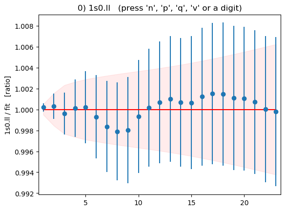
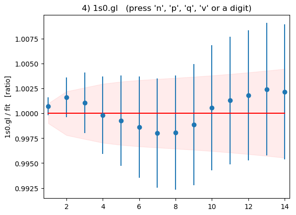
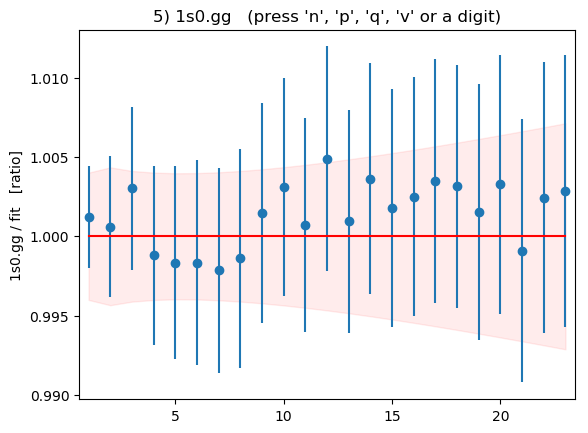
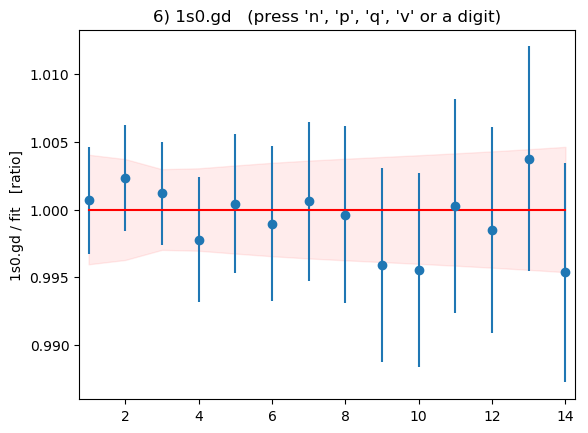
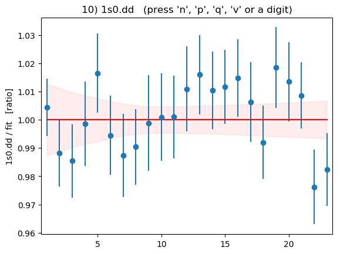
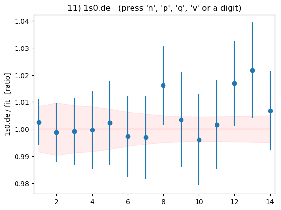
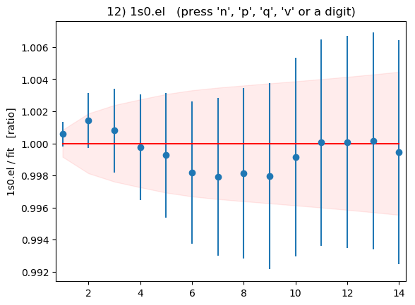
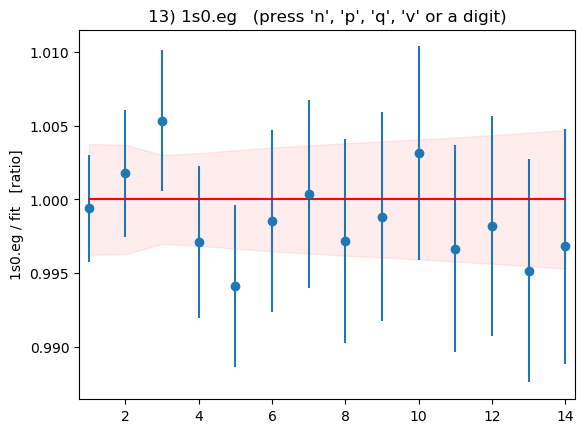
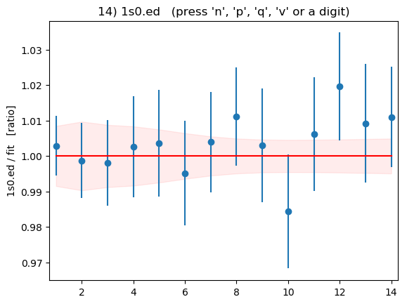
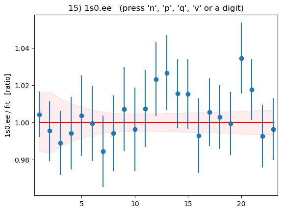

Annotated Example: Matrix Correlator¶
Introduction¶
Matrix correlators, built from multiple sources and sinks,
greatly improve results for the excited states in the correlators.
Here we analyze  correlators using 4 sources/sinks using
a prior designed by
correlators using 4 sources/sinks using
a prior designed by corrfitter.EigenBasis.
A major challenge when studying excited states with multi-source
fits is the appearance in the fit of spurious states, with amplitudes that
are essentially zero, between the real states in the correlator.
These states contribute little to the correlators, because of their
vanishing amplitudes, but they usually have a strong negative impact
on the errors of states just below them and above them. They also can cause
the fitter to stall, taking 1000s of iterations to change nothing other
than the parameters of the spurious state.
corrfitter.EigenBasis addresses this problem by creating a prior that discourages
spurious states. It encodes the fact that only a small number of states
still couple to the matrix correlator by moderate values of t, and
therefore, that there exist linear combinations of the sources that
couple strongly to individual low-lying states but not the others. This
leaves little room for spurious low-lying states.
This example involves only two-point correlators. Priors generated
by corrfitter.EigenBasis are also useful in fits to three-point correlators,
with multiple eigen-bases if different types of hadron are involved.
The source code (etab.py) and data file
(etab.data) are included with the corrfitter distribution,
in the examples/ directory.
The data are from the HPQCD collaboration.
Code¶
The main method follows the template in Basic Fits, but
modified to handle the corrfitter.EigenBasis object basis:
from __future__ import print_function # makes this work for python2 and 3
import collections
import gvar as gv
import numpy as np
import corrfitter as cf
SHOWPLOTS = False # display plots at end of fits?
def main():
data, basis = make_data('etab.h5')
fitter = cf.CorrFitter(models=make_models(basis))
p0 = None
for N in range(1, 8):
print(30 * '=', 'nterm =', N)
prior = make_prior(N, basis)
fit = fitter.lsqfit(data=data, prior=prior, p0=p0, svdcut=0.0004)
print(fit.format(pstyle=None if N < 7 else 'v'))
p0 = fit.pmean
print_results(fit, basis, prior, data)
if SHOWPLOTS:
fit.show_plots(save='etab.{}.png', view='ratio')
The eigen-basis is created by make_data('etab.h5'):
def make_data(filename):
data = gv.dataset.avg_data(cf.read_dataset(filename, grep='1s0'))
basis = cf.EigenBasis(
data, keyfmt='1s0.{s1}{s2}', srcs=['l', 'g', 'd', 'e'],
t=(1, 2), tdata=range(1, 24),
)
return data, basis
It reads Monte Carlo
data from file 'etab.h5', which is an hdf5-format file that
contains 16 hdf5 datasets of interest:
>>> import h5py
>>> dset = h5py.File('etab.h5', 'r')
>>> for v in dset.values():
... print(v)
<HDF5 dataset "1s0.dd": shape (113, 23), type "<f8">
<HDF5 dataset "1s0.de": shape (113, 23), type "<f8">
<HDF5 dataset "1s0.dg": shape (113, 23), type "<f8">
<HDF5 dataset "1s0.dl": shape (113, 23), type "<f8">
<HDF5 dataset "1s0.ed": shape (113, 23), type "<f8">
<HDF5 dataset "1s0.ee": shape (113, 23), type "<f8">
<HDF5 dataset "1s0.eg": shape (113, 23), type "<f8">
<HDF5 dataset "1s0.el": shape (113, 23), type "<f8">
<HDF5 dataset "1s0.gd": shape (113, 23), type "<f8">
<HDF5 dataset "1s0.ge": shape (113, 23), type "<f8">
<HDF5 dataset "1s0.gg": shape (113, 23), type "<f8">
<HDF5 dataset "1s0.gl": shape (113, 23), type "<f8">
<HDF5 dataset "1s0.ld": shape (113, 23), type "<f8">
<HDF5 dataset "1s0.le": shape (113, 23), type "<f8">
<HDF5 dataset "1s0.lg": shape (113, 23), type "<f8">
<HDF5 dataset "1s0.ll": shape (113, 23), type "<f8">
...
Each of these contains 113 Monte Carlo samples for a
different correlator evaluated at times t=1,2...23:
>>> print(dset['1s0.ll'][:, :])
[[ 0.360641 0.202182 0.134458 ..., 0.00118724 0.00091401 0.00070451]
[ 0.365291 0.210573 0.143632 ..., 0.00133125 0.0010258 0.00078879]
[ 0.362848 0.210732 0.143037 ..., 0.00130843 0.00101 0.00077627]
...,
[ 0.364053 0.209284 0.141544 ..., 0.00120762 0.00093206 0.0007196 ]
[ 0.365236 0.209835 0.139057 ..., 0.00116917 0.00089636 0.00069045]
[ 0.362479 0.20709 0.136687 ..., 0.00106393 0.0008269 0.00064707]]
The sixteen different correlators have tags given by:
'1s0.{s1}{s2}'.format(s1=s1, s2=s2)
where s1 and s2 are drawn from the list
['l', 'g', 'd', 'e'] which labels the sources and sinks used
to create the correlators.
The data are read in, and their means and covariance matrix computed
using gvar.dataset.avg_data(). corrfitter.EigenBasis then creates an
eigen-basis by solving a generalized eigenvalue problem involving the
matrices of correlators at t=1 and t=2. (One might want
larger t values generally, but these data are too noisy.)
The eigenanalysis constructs a set of eigen-sources
that are linear combinations of the original sources chosen
so that each eigen-source overlaps strongly with one of the
lowest four states in the correlator, and weakly with all the others.
This eigen-basis is used later to construct the prior.
A correlator fitter, called fitter, is created from the list of correlator
models returned by make_models(basis):
def make_models(basis):
models = []
for s1 in basis.srcs:
for s2 in basis.srcs:
tfit = basis.tdata if s1 == s2 else basis.tdata[:14]
models.append(
cf.Corr2(
datatag=basis.keyfmt.format(s1=s1, s2=s2),
tdata=basis.tdata, tfit=tfit,
a='etab.' + s1, b='etab.' + s2, dE='etab.dE',
)
)
return models
There is one model for each correlator to be fit, so 16 in all. The keys
(datatag) for the correlator data are constructed from information
stored in the basis. Each correlator
has data (tdata) for t=1...23.
We fit all t values (tfit) for the diagonal elements of the
matrix correlator, but only about half the t values for other
correlators — the information at large t is highly correlated between
different correlators, and therefore somewhat redundant. The
amplitudes are labeled by 'etab.l', 'etab.g', 'etab.d', and
'etab.e' in the prior. The energy differences are labeled by 'etab.dE'.
We try fits with N=1,2..9 terms in the fit function. The number of
terms is encoded in the prior, which is constructed by
make_prior(N, basis):
def make_prior(N, basis):
return basis.make_prior(nterm=N, keyfmt='etab.{s1}')
The prior looks complicated
k prior[k]
------------ ---------------------------------------------------------------
etab.l [-0.51(17), -0.45(16), 0.50(17), 0.108(94), -0.06(87) ...]
etab.g [-0.88(27), 0.104(97), 0.051(92), -0.004(90), -0.13(90) ...]
etab.d [-0.243(86), -0.50(15), -0.268(91), -0.161(71), -0.21(60) ...]
etab.e [-0.211(83), -0.42(13), -0.30(10), 0.26(10), -0.12(61) ...]
log(etab.dE) [-1.3(2.3), -0.5(1.0), -0.5(1.0), -0.5(1.0), -0.5(1.0) ...]
but its underlying structure becomes clear if we project it unto the
eigen-basis using prior_eig = basis.apply(prior, keyfmt='etab.{s1}'):
k prior_eig[k]
------ ------------------------------------------------------------
etab.0 [1.00(30), .03(10), .03(10), .03(10), .2(1.0) ... ]
etag.1 [ .03(10), 1.00(30), .03(10), .03(10), .2(1.0) ... ]
etab.2 [ .03(10), .03(10), 1.00(30), .03(10), .2(1.0) ... ]
etab.3 [ .03(10), .03(10), .03(10), 1.00(30), .2(1.0) ... ]
The a priori expectation built into prior_eig (and therefore prior) is
that the ground state overlaps strongly with the first source in the
eigen-basis, and weakly with the other three. Similarly the first excited state
overlaps strongly with the second eigen-source, but none of the others. And so
on. The fifth and higher excited states can overlap with every eigen-source.
The priors for the energy differences between successive levels are based
upon the energies obtained from the eigenanalysis (basis.E): the dE
prior for the ground state is taken to be E0(E0), where E0=basis.E[0],
while for the other states it equals dE1(dE1), where
dE1=basis.E[1]-basis.E[0]. The prior specifies log-normal statistics for
etab.dE and so replaces it by log(etab.dE).
The fit is done by fitter.lsqfit(...). An SVD cut is needed
(svdcut=0.0004) because the data are highly correlated. The data are also
over-binned, to keep down the size of the corrfitter distribution, and
this mandates an SVD cut, as well. Fit stability is sometimes improved by
applying the SVD cut to the data in the eigen-basis rather than in the
original source basis. Here this could be done by replacing the last line of
make_data(...) with:
return basis.svd(data, svdcut=5e-3), basis
and dropping the svdcut=0.0004 from fitter.lsqfit(...). The size
of the svdcut is usually different.
Final results are printed out by print_results(...)
after the last fit is finished:
def print_results(fit, basis, prior, data):
print(30 * '=', 'Results\n')
print(basis.tabulate(fit.p, keyfmt='etab.{s1}'))
print(basis.tabulate(fit.p, keyfmt='etab.{s1}', eig_srcs=True))
E = np.cumsum(fit.p['etab.dE'])
outputs = collections.OrderedDict()
outputs['a*E(2s-1s)'] = E[1] - E[0]
outputs['a*E(3s-1s)'] = E[2] - E[0]
outputs['E(3s-1s)/E(2s-1s)'] = (E[2] - E[0]) / (E[1] - E[0])
inputs = collections.OrderedDict()
inputs['prior'] = prior
inputs['data'] = data
inputs['svdcut'] = fit.svdcorrection
print(gv.fmt_values(outputs))
print(gv.fmt_errorbudget(outputs, inputs, colwidth=18))
This method first writes out two tables listing energies and amplitudes for
the first 4 states in the correlator. The first table shows results for the
original sources, while the second is for the eigen-sources. The correlators
are from NRQCD so only energy differences are physical. The energy differences
for each of the first two excited states relative to the ground states are
stored in dictionary outputs. These are in lattice units. outputs
also contains the ratio of 3s-1s difference to the 2s-1s difference,
and here the lattice spacing cancels out. The code automatically handles
statistical correlations between different energies as it does the arithmetic
for outputs — the fit results are all gvar.GVars. The outputs
are tabulated using gvar.fmt_values(). An error budget is also
produced, using gvar.fmt_errorbudget(), showing how much error
for each quantity comes from uncertainties in the prior and data, and
from uncertainties introduced by the SVD cut.
Finally plots showing the data divided by the fit for each correlator are displayed (optionally).
Results¶
Running the code produces the following output for the last fit (N=7):
============================== nterm = 7
Least Square Fit:
chi2/dof [dof] = 1 [260] Q = 0.51 logGBF = 2175.1
Parameters:
etab.l 0 -0.50680 (50) [ -0.51 (17) ]
1 -0.3910 (62) [ -0.45 (16) ]
2 0.357 (27) [ 0.50 (17) ]
3 0.169 (40) [ 0.108 (94) ]
4 -0.550 (70) [ -0.06 (87) ]
5 0.15 (27) [ -0.06 (87) ]
6 0.07 (15) [ -0.06 (87) ]
log(etab.dE) 0 -1.36208 (66) [ -1.3 (2.3) ]
1 -0.647 (10) [ -0.5 (1.0) ]
2 -1.216 (61) [ -0.5 (1.0) ]
3 -0.79 (16) [ -0.5 (1.0) ]
4 -0.89 (26) [ -0.5 (1.0) ]
5 -0.59 (94) [ -0.5 (1.0) ]
6 -0.16 (92) [ -0.5 (1.0) ]
etab.g 0 -0.87038 (84) [ -0.88 (27) ]
1 0.1440 (49) [ 0.104 (97) ]
2 0.039 (10) [ 0.051 (92) ]
3 0.037 (17) [ -0.004 (90) ]
4 -0.172 (76) [ -0.13 (90) ]
5 -0.22 (13) [ -0.13 (90) ]
6 0.04 (23) [ -0.13 (90) ]
etab.d 0 -0.21636 (28) [ -0.243 (86) ]
1 -0.4114 (61) [ -0.50 (15) ]
2 -0.246 (17) [ -0.268 (91) ]
3 -0.099 (26) [ -0.161 (71) ]
4 -0.133 (42) [ -0.21 (60) ]
5 0.04 (25) [ -0.21 (60) ]
6 -0.47 (20) [ -0.21 (60) ]
etab.e 0 -0.19708 (24) [ -0.211 (83) ]
1 -0.3430 (62) [ -0.42 (13) ]
2 -0.292 (15) [ -0.30 (10) ]
3 0.237 (30) [ 0.26 (10) ]
4 -0.044 (44) [ -0.12 (61) ]
5 0.04 (22) [ -0.12 (61) ]
6 -0.44 (19) [ -0.12 (61) ]
----------------------------------------------------
etab.dE 0 0.25613 (17) [ 0.27 (62) ]
1 0.5237 (52) [ 0.62 (62) ]
2 0.296 (18) [ 0.62 (62) ]
3 0.455 (74) [ 0.62 (62) ]
4 0.41 (11) [ 0.62 (62) ]
5 0.55 (52) [ 0.62 (62) ]
6 0.85 (78) [ 0.62 (62) ]
Settings:
svdcut/n = 0.0004/172 tol = (1e-08*,1e-10,1e-10) (itns/time = 97/3.5)
This is a good fit, with a chi-squared per degree of freedom of 1.0 for
260 degrees of freedom (the number of data points fit); the Q or p-value
is 0.51. This fit required 97 iterations, but took only a few seconds
on a laptop. The results are almost identical to those from N=6 and N=8.
The final energies and amplitudes for the original sources are listed as
E l g d e
==================================================================
0 0.25613(17) -0.50680(50) -0.87038(84) -0.21636(28) -0.19708(24)
1 0.7798(52) -0.3910(62) 0.1440(49) -0.4114(61) -0.3430(62)
2 1.076(21) 0.357(27) 0.039(10) -0.246(17) -0.292(15)
3 1.531(70) 0.169(40) 0.037(17) -0.099(26) 0.237(30)
while for the eigen-sources they are
E 0 1 2 3
==================================================================
0 0.25613(17) 0.98138(93) 0.00767(45) -0.00246(21) 0.00173(14)
1 0.7798(52) -0.0370(45) 0.8804(94) -0.023(13) 0.0131(48)
2 1.076(21) 0.0359(88) 0.097(37) 0.805(31) -0.031(20)
3 1.531(70) -0.027(18) -0.043(40) 0.071(60) 0.817(32)
The latter shows that the eigen-sources align quite well with the first four states, as hoped. The errors, especially for the first three states, are much smaller than the prior errors, which indicates strong signals for these states.
Finally values and an error budget are presented for the 2s-1s and
3s-1s energy differences (in lattice units) and the ratio of the two:
Values:
a*E(2s-1s): 0.5237(52)
a*E(3s-1s): 0.820(21)
E(3s-1s)/E(2s-1s): 1.566(33)
Partial % Errors:
a*E(2s-1s) a*E(3s-1s) E(3s-1s)/E(2s-1s)
--------------------------------------------------------------------------
prior: 0.32 0.99 0.78
data: 0.69 1.37 1.07
svdcut: 0.64 1.91 1.62
--------------------------------------------------------------------------
total: 1.00 2.55 2.09
The first excited state is obviously more accurately determined than the second state, but the fit improves our knowledge of both. The energies for the fifth and higher states merely echo the a priori information in the prior — the data are not sufficiently accurate to add much new information to what was in the prior. The prior is less important for the three quantities tabulated here. The dominant source of error in each case comes from either the SVD cut or the statistical errors in the data.
Summary plots showing the data divided by the fit as a function of t
for each of the 16 correlators is shown below:
|  | 
|
||
|  |  |  | 
|
|  |  | ||
|  |  |  |  |
These plots are displayed by the code above if flag
DISPLAYPLOTS = True is set at the beginning of the code. The points with
error bars are correlator data points; the fit result is 1.0 in these
plots; and the dashed lines show the uncertainty in the fit function
values for the best-fit parameters. Fit and data agree well for
all correlators and all t values. As expected, strong correlations
exist between points with near-by ts.
Fit Stability¶
It is a good idea in fits like this one to test the stability of the
results to significant changes in the prior. This is especially true for
quantities like the 3s-1s splitting that involve more highly excited
states. The default prior in effect assigns each of the four sources in the
new basis to one of the four states in the correlator with the lowest
energies. Typically the actual correspondence between source and low-energy
state weakens as the energy increases. So an obvious test is to rerun the
fit but with a prior that associates states with only three of the sources,
leaving the fourth source unconstrained. This is done by replacing
def make_prior(N, basis):
return basis.make_prior(nterm=N, keyfmt='etab.{s1}')
with
def make_prior(N, basis):
return basis.make_prior(nterm=N, keyfmt='etab.{s1}', states=[0, 1, 2])
in the code. The states option in the second basis.make_prior(...)
assigns the three lowest lying states (in order of increasing energy)
to the first three eigen-sources, but leaves the fourth and higher states
unassigned. The prior for the amplitudes projected onto the eigen-basis
then becomes
k prior_eig[k]
------ ----------------------------------------------------------
etab.0 [1.00(30), .03(10), .03(10), .2(1.0), .2(1.0) ... ]
etab.1 [ .03(10), 1.00(30), .03(10), .2(1.0), .2(1.0) ... ]
etab.2 [ .03(10), .03(10), 1.00(30), .2(1.0), .2(1.0) ... ]
etab.3 [ .2(1.0), .2(1.0), .2(1.0), .2(1.0), .2(1.0) ... ]
where now no strong assumption is made about the overlaps of the first three eigen-sources with the fourth state, or about the overlap of the fourth source with any state. Running with this (more conservative) prior gives the following results for the last fit and summary:
============================== nterm = 7
Least Square Fit:
chi2/dof [dof] = 0.99 [260] Q = 0.52 logGBF = 2167.6
Parameters:
etab.l 0 -0.50677 (51) [ -0.51 (17) ]
1 -0.3908 (62) [ -0.45 (16) ]
2 0.358 (26) [ 0.50 (17) ]
3 -0.187 (51) [ -0.06 (87) ]
4 -0.533 (92) [ -0.06 (87) ]
5 0.19 (27) [ -0.06 (87) ]
6 0.07 (17) [ -0.06 (87) ]
log(etab.dE) 0 -1.36207 (66) [ -1.3 (2.3) ]
1 -0.6465 (98) [ -0.5 (1.0) ]
2 -1.214 (61) [ -0.5 (1.0) ]
3 -0.75 (16) [ -0.5 (1.0) ]
4 -0.93 (29) [ -0.5 (1.0) ]
5 -0.61 (94) [ -0.5 (1.0) ]
6 -0.15 (92) [ -0.5 (1.0) ]
etab.g 0 -0.87032 (84) [ -0.88 (27) ]
1 0.1442 (48) [ 0.104 (97) ]
2 0.038 (10) [ 0.051 (92) ]
3 -0.042 (21) [ -0.13 (90) ]
4 -0.182 (71) [ -0.13 (90) ]
5 -0.21 (14) [ -0.13 (90) ]
6 0.04 (22) [ -0.13 (90) ]
etab.d 0 -0.21635 (28) [ -0.243 (86) ]
1 -0.4118 (59) [ -0.50 (15) ]
2 -0.244 (17) [ -0.268 (91) ]
3 0.097 (32) [ -0.21 (60) ]
4 -0.136 (45) [ -0.21 (60) ]
5 0.05 (25) [ -0.21 (60) ]
6 -0.47 (20) [ -0.21 (60) ]
etab.e 0 -0.19706 (24) [ -0.211 (83) ]
1 -0.3432 (61) [ -0.42 (13) ]
2 -0.292 (15) [ -0.30 (10) ]
3 -0.240 (35) [ -0.12 (61) ]
4 -0.034 (50) [ -0.12 (61) ]
5 0.05 (22) [ -0.12 (61) ]
6 -0.43 (20) [ -0.12 (61) ]
----------------------------------------------------
etab.dE 0 0.25613 (17) [ 0.27 (62) ]
1 0.5239 (51) [ 0.62 (62) ]
2 0.297 (18) [ 0.62 (62) ]
3 0.470 (77) [ 0.62 (62) ]
4 0.39 (11) [ 0.62 (62) ]
5 0.54 (51) [ 0.62 (62) ]
6 0.86 (79) [ 0.62 (62) ]
Settings:
svdcut/n = 0.0004/172 tol = (1e-08*,1e-10,1e-10) (itns/time = 106/5.0)
============================== Results
E l g d e
==================================================================
0 0.25613(17) -0.50677(51) -0.87032(84) -0.21635(28) -0.19706(24)
1 0.7800(52) -0.3908(62) 0.1442(48) -0.4118(59) -0.3432(61)
2 1.077(21) 0.358(26) 0.038(10) -0.244(17) -0.292(15)
3 1.547(73) -0.187(51) -0.042(21) 0.097(32) -0.240(35)
E 0 1 2 3
==================================================================
0 0.25613(17) 0.98131(94) 0.00768(45) -0.00246(21) 0.00172(14)
1 0.7800(52) -0.0372(44) 0.8808(91) -0.022(13) 0.0132(52)
2 1.077(21) 0.0363(89) 0.094(37) 0.807(30) -0.033(23)
3 1.547(73) 0.033(22) 0.056(46) -0.088(77) -0.821(32)
Values:
a*E(2s-1s): 0.5239(51)
a*E(3s-1s): 0.821(21)
E(3s-1s)/E(2s-1s): 1.567(33)
Partial % Errors:
a*E(2s-1s) a*E(3s-1s) E(3s-1s)/E(2s-1s)
--------------------------------------------------------------------------
prior: 0.31 0.94 0.73
data: 0.68 1.39 1.11
svdcut: 0.63 1.89 1.60
--------------------------------------------------------------------------
total: 0.98 2.53 2.08
The energies and amplitudes for the first three states are almost unchanged, which gives us confidence in the original results. Results for the fourth and higher states have larger errors, as expected.
Note that while the chi-squared value for this last fit is almost identical to
that in the original fit, the Bayes Factor (from logGBF) is
exp(2175.1-2160.9)=1,469,000 times larger for the original fit. The Bayes Factor
gives us a sense of which prior the data prefer. Specifically it says that
our Monte Carlo data are 1,469,000 times more likely to have come from a model
with the original prior than from one with the more conservative prior. This
further reinforces our confidence in the original results.
Alternative Organization¶
Our fit uses the corrfitter.EigenBasis to construct a special prior for the fit,
but leaves the correlators unchanged. An alternative approach is to project
the correlators unto the eigen-basis, and then to fit them with a fit function
defined directly in terms of the eigen-basis. This approach is conceptually
identical to that above, but in practice it gives somewhat different
results since the SVD cut enters differently. A version of the code above
that uses this approach is:
from __future__ import print_function # makes this work for python2 and 3
import collections
import gvar as gv
import numpy as np
import corrfitter as cf
DISPLAYPLOTS = False # display plots at end of fits?
def main():
data, basis = make_data('etab.h5')
fitter = cf.CorrFitter(models=make_models(basis))
p0 = None
for N in range(1, 8):
print(30 * '=', 'nterm =', N)
prior = make_prior(N, basis)
fit = fitter.lsqfit(data=data, prior=prior, p0=p0, svdcut=0.005 ) #1
print(fit.format(pstyle=None if N < 7 else 'm'))
p0 = fit.pmean
print_results(fit, basis, prior, data)
if DISPLAYPLOTS:
fitter.display_plots()
def make_data(filename):
data = gv.dataset.avg_data(cf.read_dataset(filename))
basis = cf.EigenBasis(
data, keyfmt='1s0.{s1}{s2}', srcs=['l', 'g', 'd', 'e'],
t=(1,2), tdata=range(1,24),
)
return basis.apply(data, keyfmt='1s0.{s1}{s2}'), basis #2
def make_models(basis):
models = []
for s1 in basis.eig_srcs: #3
for s2 in basis.eig_srcs: #4
tfit = basis.tdata if s1 == s2 else basis.tdata[:14]
models.append(
cf.Corr2(
datatag=basis.keyfmt.format(s1=s1, s2=s2),
tdata=basis.tdata, tfit=tfit,
a='etab.' + s1, b='etab.' + s2, dE='etab.dE',
)
)
return models
def make_prior(N, basis):
return basis.make_prior(nterm=N, keyfmt='etab.{s1}', eig_srcs=True) #5
def print_results(fit, basis, prior, data):
print(30 * '=', 'Results\n')
print(basis.tabulate(fit.p, keyfmt='etab.{s1}'))
print(basis.tabulate(fit.p, keyfmt='etab.{s1}', eig_srcs=True))
E = np.cumsum(fit.p['etab.dE'])
outputs = collections.OrderedDict()
outputs['a*E(2s-1s)'] = E[1] - E[0]
outputs['a*E(3s-1s)'] = E[2] - E[0]
outputs['E(3s-1s)/E(2s-1s)'] = (E[2] - E[0]) / (E[1] - E[0])
inputs = collections.OrderedDict()
inputs['prior'] = prior
inputs['data'] = data
inputs['svdcut'] = fit.svdcorrection
print(gv.fmt_values(outputs))
print(gv.fmt_errorbudget(outputs, inputs, colwidth=18))
if __name__ == '__main__':
main()
Only five lines in this code differ from the original:
the SVD cut is different (#1); the data are projected onto the
eigen-basis (#2); the models are defined in terms
of the eigen-sources (#3 and #4); and the prior is defined
for the eigen-sources (#5).
The fit results from the new code are very similar to before; there is little difference between the two approaches in this case:
============================== nterm = 7
Least Square Fit:
chi2/dof [dof] = 0.94 [260] Q = 0.77 logGBF = 1945.2
Parameters:
etab.0 0 0.9834 (10) [ 1.00 (30) ]
1 -0.0413 (52) [ 0.03 (10) ]
2 0.0478 (90) [ 0.03 (10) ]
3 -0.031 (19) [ 0.03 (10) ]
4 0.247 (55) [ 0.2 (1.0) ]
5 -0.16 (25) [ 0.2 (1.0) ]
6 0.16 (28) [ 0.2 (1.0) ]
log(etab.dE) 0 -1.36278 (74) [ -1.3 (2.3) ]
1 -0.646 (12) [ -0.5 (1.0) ]
2 -1.207 (59) [ -0.5 (1.0) ]
3 -0.68 (16) [ -0.5 (1.0) ]
4 -0.92 (57) [ -0.5 (1.0) ]
5 0.01 (84) [ -0.5 (1.0) ]
6 -0.42 (95) [ -0.5 (1.0) ]
etab.1 0 0.00722 (52) [ 0.03 (10) ]
1 0.888 (11) [ 1.00 (30) ]
2 0.051 (37) [ 0.03 (10) ]
3 -0.087 (46) [ 0.03 (10) ] *
4 0.37 (19) [ 0.2 (1.0) ]
5 0.57 (42) [ 0.2 (1.0) ]
6 0.50 (67) [ 0.2 (1.0) ]
etab.2 0 -0.00266 (18) [ 0.03 (10) ]
1 -0.004 (13) [ 0.03 (10) ]
2 0.816 (27) [ 1.00 (30) ]
3 0.113 (59) [ 0.03 (10) ]
4 -0.45 (18) [ 0.2 (1.0) ]
5 -0.09 (71) [ 0.2 (1.0) ]
6 0.96 (46) [ 0.2 (1.0) ]
etab.3 0 0.001716 (61) [ 0.03 (10) ]
1 0.0165 (45) [ 0.03 (10) ]
2 -0.030 (18) [ 0.03 (10) ]
3 0.837 (36) [ 1.00 (30) ]
4 0.153 (87) [ 0.2 (1.0) ]
5 0.03 (11) [ 0.2 (1.0) ]
6 -0.03 (16) [ 0.2 (1.0) ]
---------------------------------------------------
etab.dE 0 0.25595 (19) [ 0.27 (62) ]
1 0.5239 (65) [ 0.62 (62) ]
2 0.299 (18) [ 0.62 (62) ]
3 0.505 (79) [ 0.62 (62) ]
4 0.40 (23) [ 0.62 (62) ]
5 1.01 (85) [ 0.62 (62) ]
6 0.66 (62) [ 0.62 (62) ]
Settings:
svdcut/n = 0.005/171 tol = (1e-08*,1e-10,1e-10) (itns/time = 75/3.0)
============================== Results
E l g d e
==================================================================
0 0.25595(19) -0.50776(56) -0.87229(93) -0.21654(33) -0.19725(28)
1 0.7798(65) -0.3819(80) 0.1503(46) -0.4193(68) -0.3499(69)
2 1.079(18) 0.377(25) 0.024(10) -0.229(18) -0.279(15)
3 1.584(78) 0.216(48) 0.039(16) -0.091(24) 0.249(29)
E 0 1 2 3
==================================================================
0 0.25595(19) 0.9834(10) 0.00722(52) -0.00266(18) 0.001716(61)
1 0.7798(65) -0.0413(52) 0.888(11) -0.004(13) 0.0165(45)
2 1.079(18) 0.0478(90) 0.051(37) 0.816(27) -0.030(18)
3 1.584(78) -0.031(19) -0.087(46) 0.113(59) 0.837(36)
Values:
a*E(2s-1s): 0.5239(65)
a*E(3s-1s): 0.823(18)
E(3s-1s)/E(2s-1s): 1.571(35)
Partial % Errors:
a*E(2s-1s) a*E(3s-1s) E(3s-1s)/E(2s-1s)
--------------------------------------------------------------------------
prior: 0.42 0.85 0.79
data: 0.70 1.19 1.10
svdcut: 0.93 1.66 1.75
--------------------------------------------------------------------------
total: 1.23 2.22 2.22